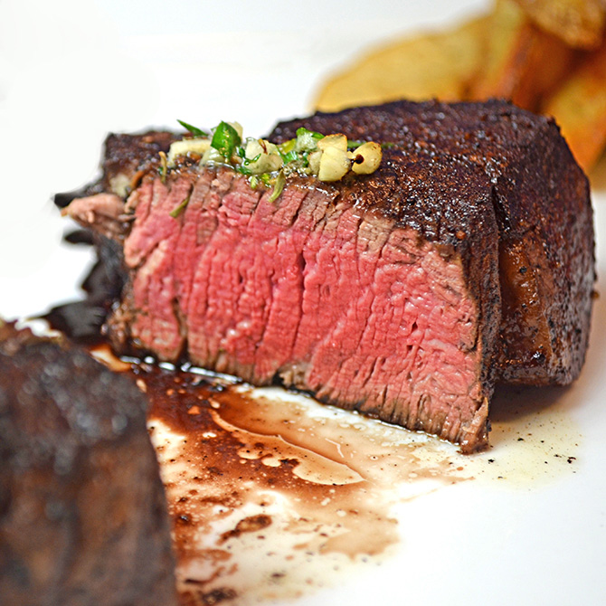

Filet Mignon

Description
The Cadilac of Steaks. A thick slice of prime beef tenderloin, seasonned and seared
to perfection on the outside, perfectly rare inside. Pairs nicely with any bold red wine
such as Zinfandel, Merlot, or Malbec. Serve topped with compund butter, Bordelaise,
or bernaise sauce to excentuate the lean flavors of this excuisite cut of beef.
Kitchen Tools Required
- 1 Half sheet pan and cooling rack.
- 1 pair of kitchen tongs.
- Instant read probe thermometer.
- 10-12 inch cast iron skillet
Ingredients
- 1 8-12 Oz. slice of prime beef tenderloin.
- 2 cloves garlic.
- 2 sprigs fresh thyme.
- Kosher salt.
- Coarse ground black pepper.
- 1 Tablespoon unsalted butter.
- 1 teaspoon vegitable oil.
Directions
- sprinkle aproximately 1/2 Teaspoon of kosher salt and pepper on both sides of the steak
and leave steak out, unrefrigerated until it reaches room temperature.
- Pre-heat oven to 225°F
- Place steak on sheetpan with cooling rack, uncovered, for aproximately 40 minutes
or until internal temperature reaches 125°F
- Melt butter and combine with cooking oil in cast iron skillet. When butter begins to smoke,
reduce heat to medium-high and add steak to skillet. cook for one minute on each side for rare.
- Place garlic cloves and thyme on top of steak and baste while cooking on each side
throughout the searing process.
- Move steak back to cooling rack and cover with foil tent for 5 minutes, then serve.